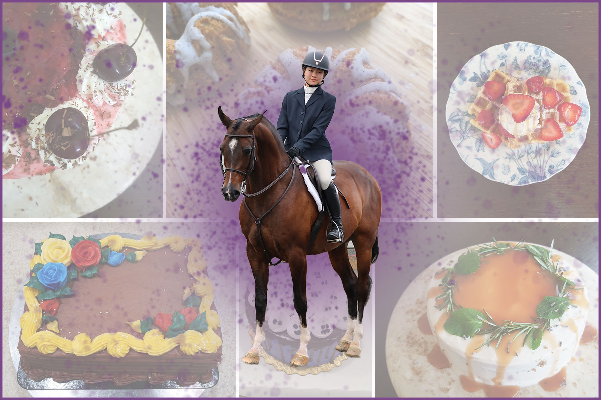

Graphic Designer with a passion in UX/UI Design
Hi there! I’m Grace and I specialize in Graphic design and Illustration. I am studying Interactive Arts and Technology at Simon Fraser University along with a Print and Digital Publishing Minor. Aside from graphic design, I am an aspiring UX/UI designer who values the principle of good design. I believe design is an innovative and flexible way to communicate with users. I also love to doodle and ideate different designs for cakes/pastries during my spare time. When I am away from my desk, you can find me baking, at the barn riding my horse, or at the horse show competing!
I spread the creativity and imaginations using lateral thinking, viewing and interpreting problems in multiple perspectives.
Let's Chat! Reach me through my email.
